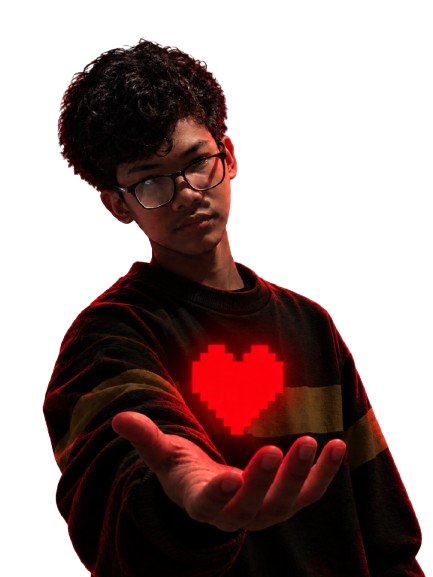

PROJECT 01
Ben_ChanelGub
เว็บไซต์แนะนำตัวในธีม Neon Gamer พร้อมโปรไฟล์และช่องทางติดต่อ
PERSONAL WEBSITE

me1.png
เรื่องราวเล็ก ๆ เกี่ยวกับฉัน แก้ไขรายละเอียดด้านล่างให้เป็นตัวคุณได้เลย

images/profile.pngนี่คือพื้นที่แนะนำตัวของฉัน ชอบอะไร ทำอะไรได้บ้าง และอะไรที่ทำให้ฉันเป็นตัวเอง
Ben (เบน)
16 ปี
ฟังเพลง อ่านหนังสือ เล่นเกม
เกม กีฬา อารมณ์ของมนุษย์
จดจำสิ่งต่าง ๆ ได้ภายในเวลาอันสั้น แต่จะลืมทุกอย่างที่จำได้ภายใน 30 วินาที
ชายธรรมดาคนนึงที่มีความฝัน
คุณลักษณะทั้งเจ็ดที่รวมกันเป็นตัวตนของฉัน

imagessoul.png
“แม้เส้นทางจะไม่ง่าย แต่ทุกครั้งที่เลือกก้าวต่อ เราก็กำลังพิสูจน์ว่าตัวตนของเรายังไม่สิ้นสุด”
พื้นที่รวมโปรเจกต์และผลงานที่ฉันสร้างขึ้น สามารถเพิ่มลิงก์ผลงานจริงได้ในภายหลัง
เว็บไซต์แนะนำตัวในธีม Neon Gamer พร้อมโปรไฟล์และช่องทางติดต่อ
โปรเจกต์รวมข้อมูลตัวละคร ประวัติ ความสามารถ และรายละเอียดต่าง ๆ
โปรเจกต์เว็บไซต์รวบรวมสูตรคณิตศาสตร์และวิทยาศาสตร์เพื่อการเรียนรู้
FIND ME ONLINE
ติดตามผลงานหรือส่งข้อความมาทักทายได้ตามช่องทางด้านล่าง
YouTube
ชื่อช่อง: Ben_gub
Instagram
ชื่อบัญชี: เบน กั๊บ
Facebook
ชื่อโปรไฟล์: เบน กั๊บ
Email
itvity3801@gmail.com